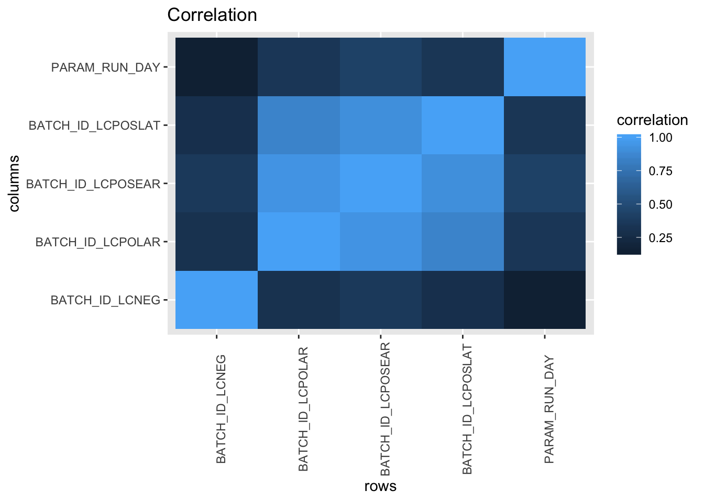
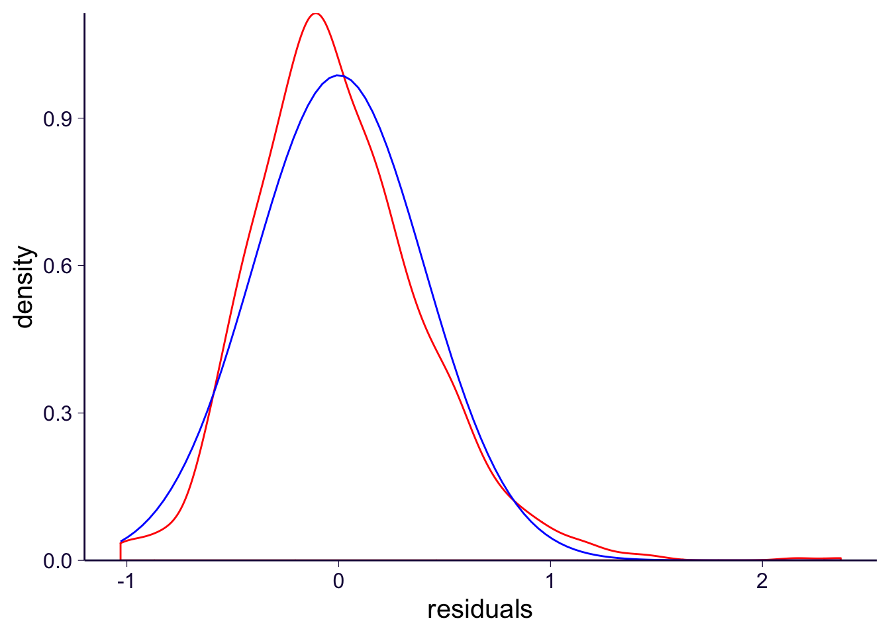

Last updated: 2019-11-12
Checks: 6 1
Knit directory: metabolomics_analysis/
This reproducible R Markdown analysis was created with workflowr (version 1.4.0). The Checks tab describes the reproducibility checks that were applied when the results were created. The Past versions tab lists the development history.
The R Markdown file has unstaged changes. To know which version of the R Markdown file created these results, you’ll want to first commit it to the Git repo. If you’re still working on the analysis, you can ignore this warning. When you’re finished, you can run wflow_publish to commit the R Markdown file and build the HTML.
Great job! The global environment was empty. Objects defined in the global environment can affect the analysis in your R Markdown file in unknown ways. For reproduciblity it’s best to always run the code in an empty environment.
The command set.seed(20191108) was run prior to running the code in the R Markdown file. Setting a seed ensures that any results that rely on randomness, e.g. subsampling or permutations, are reproducible.
Great job! Recording the operating system, R version, and package versions is critical for reproducibility.
Nice! There were no cached chunks for this analysis, so you can be confident that you successfully produced the results during this run.
Great job! Using relative paths to the files within your workflowr project makes it easier to run your code on other machines.
Great! You are using Git for version control. Tracking code development and connecting the code version to the results is critical for reproducibility. The version displayed above was the version of the Git repository at the time these results were generated.
Note that you need to be careful to ensure that all relevant files for the analysis have been committed to Git prior to generating the results (you can use wflow_publish or wflow_git_commit). workflowr only checks the R Markdown file, but you know if there are other scripts or data files that it depends on. Below is the status of the Git repository when the results were generated:
Ignored files:
Ignored: .Rproj.user/
Ignored: workflowr.Rproj
Untracked files:
Untracked: .Rhistory
Unstaged changes:
Modified: analysis/sample_covariate_analysis.Rmd
Note that any generated files, e.g. HTML, png, CSS, etc., are not included in this status report because it is ok for generated content to have uncommitted changes.
These are the previous versions of the R Markdown and HTML files. If you’ve configured a remote Git repository (see ?wflow_git_remote), click on the hyperlinks in the table below to view them.
| File | Version | Author | Date | Message |
|---|---|---|---|---|
| html | f985f75 | meliao | 2019-11-12 | Added docs |
| Rmd | 0bd3e7e | meliao | 2019-11-12 | Start workflowr project. |
With the metabolite data came metadata about the experiment. I’d like to consider these as covariates and see if we can control for batch effects.
covariates <- read.csv('~/projects/metabolomics/data/metabolomics_converted/imputed-data-7-11-2016-sample-metadata.txt', sep = '\t')
summary(covariates) DIAG_code PARAM_BOX_LOCATION PARAM_LC_COLUMN
DIAG-23021: 1 Lipomics Box 10 Pos C9: 2 Min. :1.000
DIAG-23022: 1 Lipomics Box 2 Pos H6 : 2 1st Qu.:1.000
DIAG-23023: 1 Lipomics Box 1 Pos A1 : 1 Median :1.000
DIAG-23024: 1 Lipomics Box 1 Pos A2 : 1 Mean :1.492
DIAG-23025: 1 Lipomics Box 1 Pos A3 : 1 3rd Qu.:2.000
DIAG-23026: 1 Lipomics Box 1 Pos A4 : 1 Max. :2.000
(Other) :1113 (Other) :1111
PARAM_MANIFEST_ORDER PARAM_RUN_DAY PARAM_SPECIMEN_CONDITION
Min. : 1.0 Min. : 1.00 Acceptable:1119
1st Qu.: 280.5 1st Qu.:13.00
Median : 564.0 Median :25.00
Mean : 646.7 Mean :24.91
3rd Qu.: 843.5 3rd Qu.:37.00
Max. :1654.0 Max. :50.00
BATCH_ID_LCPOSEAR BATCH_ID_LCPOSLAT BATCH_ID_LCNEG BATCH_ID_LCPOLAR
Min. :68297 Min. :68293 Min. :68363 Min. :68305
1st Qu.:68503 1st Qu.:68499 1st Qu.:68586 1st Qu.:68511
Median :68757 Median :68753 Median :68824 Median :68765
Mean :68719 Mean :68738 Mean :68825 Mean :68741
3rd Qu.:68997 3rd Qu.:68993 3rd Qu.:69088 3rd Qu.:69005
Max. :69196 Max. :69251 Max. :69255 Max. :69200
It seems that we should consider all of these as factors
covariates <- read.csv('~/projects/metabolomics/data/metabolomics_converted/imputed-data-7-11-2016-sample-metadata.txt',
sep = '\t',
colClasses = c('factor'))
rownames(covariates) <- covariates$DIAG_code
n_unique <- function(x){length(levels(x))}
unique_factors <- sapply(covariates, n_unique)
unique_factors DIAG_code PARAM_BOX_LOCATION PARAM_LC_COLUMN
1119 1117 2
PARAM_MANIFEST_ORDER PARAM_RUN_DAY PARAM_SPECIMEN_CONDITION
1117 50 1
BATCH_ID_LCPOSEAR BATCH_ID_LCPOSLAT BATCH_ID_LCNEG
13 14 15
BATCH_ID_LCPOLAR
14 I would guess that there is a lot of redundancy in these data. I will first only look at the batch IDs.
list_to_drop <- c('DIAG_code',
'PARAM_BOX_LOCATION',
'PARAM_MANIFEST_ORDER',
'PARAM_SPECIMEN_CONDITION',
'PARAM_LC_COLUMN')
for(i in list_to_drop){
covariates[[i]] <- NULL
}I will plot a correlation heatmap. The results shown here could be an artifact of the order that R assigned factor levels.
corr_heatmap <-function(df, title = "Correlation"){
cor_df <- data.frame(cor(df))
cor_df$rows <- rownames(cor_df)
df_for_plot <- cor_df %>% pivot_longer(-rows, names_to = 'columns', values_to ='correlation')
plt <- (ggplot(data = df_for_plot, aes(rows, columns, fill = correlation))
+ geom_tile()
+ theme(axis.text.x = element_text(angle = 90))
+ labs(title = title))
return(plt)
}
cov_numeric <- data.frame(sapply(covariates, as.numeric))
bb <- corr_heatmap(cov_numeric)
bb
| Version | Author | Date |
|---|---|---|
| f985f75 | meliao | 2019-11-12 |
I think I will now only focus on PARAM_RUN_DAY and BATCH_ID_LCNEG.
list_to_drop <- c('BATCH_ID_LCPOSLAT',
'BATCH_ID_LCPOSEAR',
'BATCH_ID_LCPOLAR')
for(i in list_to_drop){
covariates[[i]] <- NULL
}I will choose a random meatabolite to regress:
\[ Metabolite = \sum \beta_i \ \text{BATCH_ID_LCNEG}_i + \sum \beta_i \ \text{PARAM_RUN_DAY}_i \]
covariate_regression <- function(response, covariates){
covariates$metabolite <- response
reg_obj <- lm(metabolite ~ . , data = covariates)
return(reg_obj)
}
single_reg_obj <- covariate_regression(imputed_df$X1.2.dilinoleoyl.GPC..18.2.18.2., covariates)
print(summary(single_reg_obj))
Call:
lm(formula = metabolite ~ ., data = covariates)
Residuals:
Min 1Q Median 3Q Max
-1.02969 -0.27543 -0.04596 0.22907 2.37009
Coefficients: (14 not defined because of singularities)
Estimate Std. Error t value Pr(>|t|)
(Intercept) 1.125222 0.086140 13.063 < 2e-16 ***
PARAM_RUN_DAY10 0.140827 0.121821 1.156 0.24793
PARAM_RUN_DAY11 0.072423 0.121821 0.595 0.55230
PARAM_RUN_DAY12 -0.160022 0.121821 -1.314 0.18927
PARAM_RUN_DAY13 0.344302 0.121821 2.826 0.00480 **
PARAM_RUN_DAY14 0.323985 0.121821 2.660 0.00794 **
PARAM_RUN_DAY15 -0.102205 0.121821 -0.839 0.40167
PARAM_RUN_DAY16 -0.340057 0.121821 -2.791 0.00534 **
PARAM_RUN_DAY17 0.143591 0.121821 1.179 0.23877
PARAM_RUN_DAY18 0.178917 0.121821 1.469 0.14221
PARAM_RUN_DAY19 0.044468 0.121821 0.365 0.71516
PARAM_RUN_DAY2 -0.112149 0.121821 -0.921 0.35746
PARAM_RUN_DAY20 0.095212 0.121821 0.782 0.43463
PARAM_RUN_DAY21 0.038140 0.121821 0.313 0.75428
PARAM_RUN_DAY22 -0.146143 0.121821 -1.200 0.23054
PARAM_RUN_DAY23 0.323213 0.121821 2.653 0.00809 **
PARAM_RUN_DAY24 -0.078143 0.121821 -0.641 0.52136
PARAM_RUN_DAY25 -0.042089 0.121821 -0.346 0.72979
PARAM_RUN_DAY26 0.034642 0.121821 0.284 0.77618
PARAM_RUN_DAY27 -0.084039 0.121821 -0.690 0.49043
PARAM_RUN_DAY28 -0.180335 0.121821 -1.480 0.13908
PARAM_RUN_DAY29 -0.094220 0.121821 -0.773 0.43944
PARAM_RUN_DAY3 -0.046104 0.121821 -0.378 0.70517
PARAM_RUN_DAY30 -0.115511 0.121821 -0.948 0.34324
PARAM_RUN_DAY31 -0.022118 0.121821 -0.182 0.85596
PARAM_RUN_DAY32 -0.072521 0.121821 -0.595 0.55176
PARAM_RUN_DAY33 -0.167644 0.121821 -1.376 0.16906
PARAM_RUN_DAY34 -0.057893 0.120545 -0.480 0.63114
PARAM_RUN_DAY35 0.013470 0.121821 0.111 0.91197
PARAM_RUN_DAY36 0.066255 0.121821 0.544 0.58664
PARAM_RUN_DAY37 -0.009475 0.121821 -0.078 0.93802
PARAM_RUN_DAY38 -0.101167 0.123197 -0.821 0.41173
PARAM_RUN_DAY39 -0.022529 0.123197 -0.183 0.85494
PARAM_RUN_DAY4 0.041604 0.121821 0.342 0.73278
PARAM_RUN_DAY40 0.002465 0.123197 0.020 0.98404
PARAM_RUN_DAY41 0.059236 0.123197 0.481 0.63074
PARAM_RUN_DAY42 0.051765 0.124687 0.415 0.67811
PARAM_RUN_DAY43 -0.085444 0.124687 -0.685 0.49332
PARAM_RUN_DAY44 0.048524 0.124687 0.389 0.69723
PARAM_RUN_DAY45 0.035523 0.124687 0.285 0.77578
PARAM_RUN_DAY46 0.157388 0.124687 1.262 0.20713
PARAM_RUN_DAY47 0.008739 0.124687 0.070 0.94414
PARAM_RUN_DAY48 -0.117011 0.124687 -0.938 0.34823
PARAM_RUN_DAY49 -0.029526 0.126306 -0.234 0.81521
PARAM_RUN_DAY5 0.127588 0.121821 1.047 0.29518
PARAM_RUN_DAY50 0.015276 0.147112 0.104 0.91732
PARAM_RUN_DAY6 -0.168855 0.121821 -1.386 0.16601
PARAM_RUN_DAY7 0.024713 0.121821 0.203 0.83928
PARAM_RUN_DAY8 0.027749 0.121821 0.228 0.81985
PARAM_RUN_DAY9 0.112812 0.121821 0.926 0.35463
BATCH_ID_LCNEG68421 NA NA NA NA
BATCH_ID_LCNEG68507 NA NA NA NA
BATCH_ID_LCNEG68586 NA NA NA NA
BATCH_ID_LCNEG68656 NA NA NA NA
BATCH_ID_LCNEG68761 NA NA NA NA
BATCH_ID_LCNEG68824 NA NA NA NA
BATCH_ID_LCNEG68942 NA NA NA NA
BATCH_ID_LCNEG69001 NA NA NA NA
BATCH_ID_LCNEG69088 NA NA NA NA
BATCH_ID_LCNEG69122 NA NA NA NA
BATCH_ID_LCNEG69190 NA NA NA NA
BATCH_ID_LCNEG69198 NA NA NA NA
BATCH_ID_LCNEG69249 NA NA NA NA
BATCH_ID_LCNEG69255 NA NA NA NA
---
Signif. codes: 0 '***' 0.001 '**' 0.01 '*' 0.05 '.' 0.1 ' ' 1
Residual standard error: 0.4131 on 1069 degrees of freedom
Multiple R-squared: 0.09586, Adjusted R-squared: 0.05442
F-statistic: 2.313 on 49 and 1069 DF, p-value: 1.369e-06So it still looks like there are singularities. I will look at just the run day.
covariates <- read.csv('~/projects/metabolomics/data/metabolomics_converted/imputed-data-7-11-2016-sample-metadata.txt',
sep = '\t',
colClasses = c('factor'))
rownames(covariates) <- covariates$DIAG_code
list_to_drop <- c('DIAG_code',
'PARAM_BOX_LOCATION',
'PARAM_MANIFEST_ORDER',
'PARAM_SPECIMEN_CONDITION',
'PARAM_LC_COLUMN',
'BATCH_ID_LCPOSLAT',
'BATCH_ID_LCPOSEAR',
'BATCH_ID_LCPOLAR',
'BATCH_ID_LCNEG')
for(i in list_to_drop){
covariates[[i]] <- NULL
}reg_obj <- covariate_regression(imputed_df$X1.7.dimethylurate, covariates)
print(summary(reg_obj))
Call:
lm(formula = metabolite ~ ., data = covariates)
Residuals:
Min 1Q Median 3Q Max
-2.2760 -0.8370 -0.2498 0.5177 23.0152
Coefficients:
Estimate Std. Error t value Pr(>|t|)
(Intercept) 1.327680 0.289404 4.588 5.01e-06 ***
PARAM_RUN_DAY10 -0.006085 0.409280 -0.015 0.98814
PARAM_RUN_DAY11 0.606969 0.409280 1.483 0.13836
PARAM_RUN_DAY12 0.377001 0.409280 0.921 0.35719
PARAM_RUN_DAY13 -0.122425 0.409280 -0.299 0.76490
PARAM_RUN_DAY14 -0.045456 0.409280 -0.111 0.91159
PARAM_RUN_DAY15 -0.113284 0.409280 -0.277 0.78200
PARAM_RUN_DAY16 0.054852 0.409280 0.134 0.89341
PARAM_RUN_DAY17 0.255889 0.409280 0.625 0.53196
PARAM_RUN_DAY18 0.318032 0.409280 0.777 0.43730
PARAM_RUN_DAY19 0.200556 0.409280 0.490 0.62422
PARAM_RUN_DAY2 0.387829 0.409280 0.948 0.34355
PARAM_RUN_DAY20 -0.337187 0.409280 -0.824 0.41021
PARAM_RUN_DAY21 -0.094611 0.409280 -0.231 0.81723
PARAM_RUN_DAY22 0.122321 0.409280 0.299 0.76510
PARAM_RUN_DAY23 1.069867 0.409280 2.614 0.00907 **
PARAM_RUN_DAY24 -0.443164 0.409280 -1.083 0.27915
PARAM_RUN_DAY25 -0.022576 0.409280 -0.055 0.95602
PARAM_RUN_DAY26 0.192579 0.409280 0.471 0.63807
PARAM_RUN_DAY27 -0.005340 0.409280 -0.013 0.98959
PARAM_RUN_DAY28 -0.078598 0.409280 -0.192 0.84775
PARAM_RUN_DAY29 0.057142 0.409280 0.140 0.88899
PARAM_RUN_DAY3 -0.090407 0.409280 -0.221 0.82522
PARAM_RUN_DAY30 -0.029522 0.409280 -0.072 0.94251
PARAM_RUN_DAY31 0.080839 0.409280 0.198 0.84346
PARAM_RUN_DAY32 0.045125 0.409280 0.110 0.91223
PARAM_RUN_DAY33 0.366636 0.409280 0.896 0.37056
PARAM_RUN_DAY34 -0.284553 0.404994 -0.703 0.48245
PARAM_RUN_DAY35 -0.160395 0.409280 -0.392 0.69521
PARAM_RUN_DAY36 0.011704 0.409280 0.029 0.97719
PARAM_RUN_DAY37 -0.088771 0.409280 -0.217 0.82833
PARAM_RUN_DAY38 -0.216541 0.413904 -0.523 0.60097
PARAM_RUN_DAY39 -0.224478 0.413904 -0.542 0.58770
PARAM_RUN_DAY4 -0.364637 0.409280 -0.891 0.37317
PARAM_RUN_DAY40 -0.158000 0.413904 -0.382 0.70274
PARAM_RUN_DAY41 -0.284764 0.413904 -0.688 0.49161
PARAM_RUN_DAY42 -0.082143 0.418911 -0.196 0.84458
PARAM_RUN_DAY43 0.242113 0.418911 0.578 0.56341
PARAM_RUN_DAY44 -0.125783 0.418911 -0.300 0.76404
PARAM_RUN_DAY45 -0.071468 0.418911 -0.171 0.86457
PARAM_RUN_DAY46 0.150187 0.418911 0.359 0.72003
PARAM_RUN_DAY47 0.253682 0.418911 0.606 0.54493
PARAM_RUN_DAY48 0.461365 0.418911 1.101 0.27099
PARAM_RUN_DAY49 0.114037 0.424350 0.269 0.78819
PARAM_RUN_DAY5 0.262662 0.409280 0.642 0.52116
PARAM_RUN_DAY50 0.068291 0.494252 0.138 0.89013
PARAM_RUN_DAY6 -0.022364 0.409280 -0.055 0.95643
PARAM_RUN_DAY7 -0.217734 0.409280 -0.532 0.59484
PARAM_RUN_DAY8 0.137738 0.409280 0.337 0.73653
PARAM_RUN_DAY9 0.659891 0.409280 1.612 0.10719
---
Signif. codes: 0 '***' 0.001 '**' 0.01 '*' 0.05 '.' 0.1 ' ' 1
Residual standard error: 1.388 on 1069 degrees of freedom
Multiple R-squared: 0.04082, Adjusted R-squared: -0.003146
F-statistic: 0.9285 on 49 and 1069 DF, p-value: 0.6148Here I am plotting the density of the residuals in red and the normal approximation in blue.
resid_df <- data.frame(residuals = single_reg_obj$residuals)
plt <- (ggplot(data = resid_df, aes(residuals))
+ geom_density(color = 'red')
+ bar_base_theme_()
+ stat_function(fun = dnorm,
color = 'blue',
args = list(mean = mean(resid_df$residuals),
sd = sd(resid_df$residuals))))
plt
| Version | Author | Date |
|---|---|---|
| f985f75 | meliao | 2019-11-12 |
The residuals for this one are not normal. I will regress out the day parameter using data/regress_out_dates.R and data/regress_out_dates.sh and I will continue the analysis in Date-Control Regression Results
sessionInfo()R version 3.5.1 (2018-07-02)
Platform: x86_64-apple-darwin15.6.0 (64-bit)
Running under: macOS 10.14.5
Matrix products: default
BLAS: /Library/Frameworks/R.framework/Versions/3.5/Resources/lib/libRblas.0.dylib
LAPACK: /Library/Frameworks/R.framework/Versions/3.5/Resources/lib/libRlapack.dylib
locale:
[1] en_US.UTF-8/en_US.UTF-8/en_US.UTF-8/C/en_US.UTF-8/en_US.UTF-8
attached base packages:
[1] stats graphics grDevices utils datasets methods base
other attached packages:
[1] forcats_0.4.0 stringr_1.4.0 dplyr_0.8.3 purrr_0.3.2
[5] readr_1.3.1 tidyr_1.0.0 tibble_2.1.1 ggplot2_3.1.1
[9] tidyverse_1.2.1
loaded via a namespace (and not attached):
[1] tidyselect_0.2.5 xfun_0.9 haven_2.1.1 lattice_0.20-35
[5] colorspace_1.4-1 vctrs_0.2.0 generics_0.0.2 htmltools_0.3.6
[9] yaml_2.2.0 rlang_0.4.0 pillar_1.3.1 glue_1.3.1
[13] withr_2.1.2 modelr_0.1.5 readxl_1.3.1 lifecycle_0.1.0
[17] plyr_1.8.4 munsell_0.5.0 gtable_0.3.0 workflowr_1.4.0
[21] cellranger_1.1.0 rvest_0.3.4 evaluate_0.14 labeling_0.3
[25] knitr_1.25 broom_0.5.2 Rcpp_1.0.1 scales_1.0.0
[29] backports_1.1.4 jsonlite_1.6 fs_1.3.1 hms_0.4.2
[33] digest_0.6.18 stringi_1.4.3 grid_3.5.1 rprojroot_1.3-2
[37] cli_1.1.0 tools_3.5.1 magrittr_1.5 lazyeval_0.2.2
[41] crayon_1.3.4 whisker_0.4 pkgconfig_2.0.2 zeallot_0.1.0
[45] ellipsis_0.2.0.1 xml2_1.2.2 lubridate_1.7.4 assertthat_0.2.1
[49] rmarkdown_1.15 httr_1.4.0 rstudioapi_0.10 R6_2.4.0
[53] nlme_3.1-137 git2r_0.26.1 compiler_3.5.1